原始髮況
評估髮絲粗細、髮量、自然捲程度，以及髮根、中段與髮尾的差異。
桃園蘆竹・南崁燙髮服務
燙髮不只是選擇捲度大小，也需要考慮髮質、髮量、自然捲程度、過往染燙紀錄，以及每天願意花多少時間整理。
ALICE Hair Salon 會先了解你的原始髮況與生活習慣，再規劃柔和大彎、立體蓬鬆、細軟髮支撐，或髮根直順搭配髮尾波浪等不同方向，讓完成效果不只當下好看，回家也知道怎麼整理。
可指定 Jay 或 IRIS，也可由 ALICE 團隊協助安排適合的設計師。
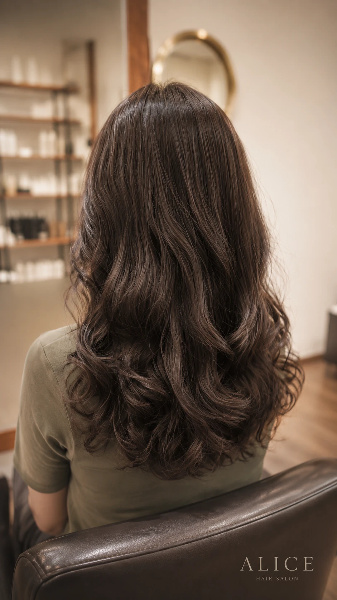
Quick Match
每個人適合的捲度與燙髮方式都不同。你可以先從目前最在意的問題開始，看看 ALICE 如何依照髮質、髮量、自然捲程度、染燙紀錄與整理習慣規劃。
髮尾自然有弧度，不喜歡過度捲曲；吹乾後簡單繞吹即可整理。
Fine Hair髮絲細軟、頂部容易服貼，想增加蓬度與輪廓，讓髮型更有空氣感。
Volume透過捲度、層次與頂部支撐增加蓬鬆感；明顯捲度可搭配慕斯與烘罩。
Natural Curl髮根自然捲與髮尾波浪分開評估，再搭配髮根直順調整與髮尾溫塑燙。
Colored Hair先確認染後、挑染區的受損與承受度，再規劃捲度、範圍與養護。
Defined Curl明顯捲度更有立體感，需配合髮質與整理習慣，以慕斯、烘罩維持輪廓。
以上分類是初步方向，實際適合的燙髮方式仍需依髮況、過往染燙紀錄、希望的捲度與每天可投入的整理時間評估。
Planning
同一張參考照片，放在不同髮質、髮量與染燙歷史的人身上，完成效果與整理方式可能完全不同。
ALICE Hair Salon 在規劃燙髮時，會先了解原始髮況、過往染燙紀錄、希望的完成效果，以及每天能投入多少時間整理，再決定適合的技術、捲度與操作範圍。
評估髮絲粗細、髮量、自然捲程度，以及髮根、中段與髮尾的差異。
確認白髮染、漂髮、挑染、居家染、黑染與縮毛矯正紀錄，判斷不同區域的承受度。
釐清想要的是柔和大彎、立體捲度、頭頂蓬鬆，還是髮根直順搭配髮尾波浪。
確認能接受吹乾繞吹，或願意搭配慕斯與烘罩整理，再規劃適合的捲度。
評估的目的不是限制髮型，而是在現有髮況條件下，找到質感、持久度與日常整理之間的平衡。
參考照片是溝通方向，不是保證結果。實際完成效果會受到髮質、髮量、自然捲程度、過往染燙紀錄及居家整理方式影響。
Perm Types
溫塑燙常運用於中長髮與長髮，可依需求規劃柔和大彎、鬆軟波浪，或較明顯、立體的捲度。
有些設計吹乾後簡單繞吹髮尾即可；希望捲度更明顯、整體更蓬鬆時，則可能需要搭配慕斯與烘罩，維持捲度的集中感與輪廓。
有些顧客的需求不是單純把頭髮燙捲，而是希望髮根自然捲較直順，同時保留髮尾柔和波浪。
這類情況可能採用髮根縮毛矯正搭配髮尾溫塑燙，依不同區域的髮況與目標效果分開處理。
冷燙可依剪髮層次、髮流與捲度配置，呈現自然紋理、髮根支撐或較有空氣感的輪廓，常運用於短髮及中長髮設計。
實際完成效果會受到髮質、髮量與整理方式影響。
| 項目 | 溫塑燙 | 複合式處理 | 冷燙 |
|---|---|---|---|
| 設計方向 | 柔和大彎、長髮波浪、立體捲度 | 髮根直順搭配髮尾波浪 | 紋理、蓬鬆、短中髮輪廓 |
| 常見髮長 | 中長髮、長髮 | 中長髮、長髮與自然捲髮況 | 短髮、中長髮 |
| 整理方式 | 柔和大彎可繞吹；明顯捲度可搭配慕斯與烘罩 | 先吹順髮根，再整理髮尾波浪 | 依捲度搭配造型品或吹整 |
| 評估重點 | 髮絲彈性、受損程度、想要捲度 | 自然捲位置、縮毛矯正紀錄、髮尾承受度 | 剪髮層次、髮量、日常造型習慣 |
| 對應案例 | P02、P05、P06、P07 | P01 | 需現場依短中髮需求評估 |
不是溫塑燙一定比較自然，也不是冷燙一定比較捲。完成效果取決於剪髮層次、捲度配置、髮絲條件、操作方式與回家整理。
Real Cases
燙髮效果不能只看完成照片。以下案例會同時說明顧客原始髮況、主要需求、技術規劃與回家整理方式，協助你判斷哪一種方向更接近自己的需求。
本頁真實燙髮案例由 Jay 杰煬與 IRIS 共同提供，呈現不同髮況、捲度與居家整理需求的設計方向。
P01
顧客原本有輕度自然捲，髮質中等偏粗，髮中至髮尾帶有輕度受損與較鬆散的線條。她希望改善髮根與髮面的自然捲感，但不想燙得太直或太捲，同時希望髮尾保有柔和大波浪，早上能夠簡單整理。
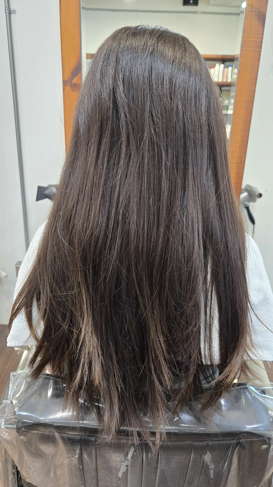
顧客為中等偏粗髮質，帶有輕度自然捲及輕度受損。整體髮量感明顯，髮中至髮尾線條較鬆散。
將髮根與髮尾視為兩種不同需求，採用髮根縮毛矯正搭配髮尾溫塑燙的分區規劃。髮根至髮中以自然直順為方向，髮尾則配置柔和大彎。
髮根與髮面呈現自然直順感，頭頂仍保留適度蓬度；髮尾形成柔和大波浪，整體輪廓更集中。
洗髮後先將髮根與髮中吹乾、吹順，再將髮尾分成左右兩側，順著捲度方向簡單繞吹即可。
P07
顧客髮質極度細軟、髮量偏少，頭頂與整體輪廓長期容易服貼。希望捲度清楚、具有支撐感，同時增加頂部與整體蓬鬆度。
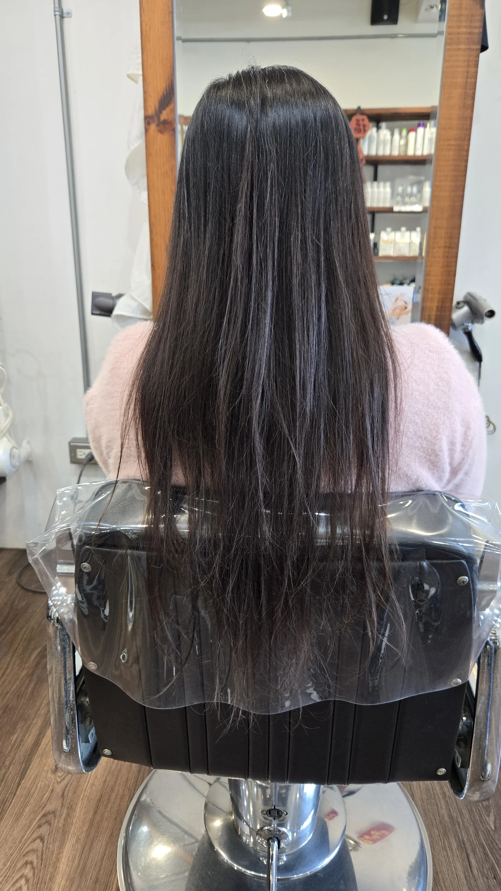
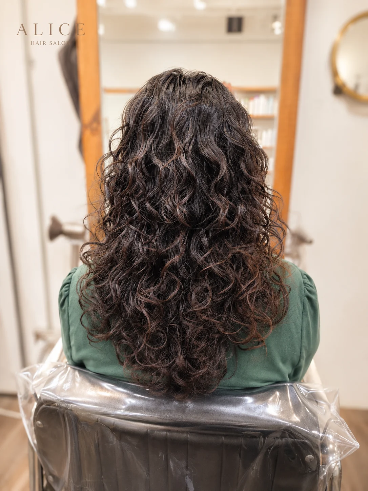
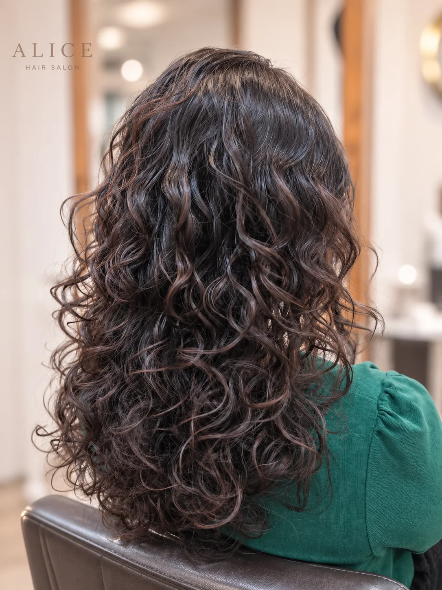
先評估細軟髮的承受度與支撐條件，再以溫塑燙配置較清楚的捲度。捲度由頂部延伸至髮尾，透過層次與排列增加視覺份量。
完成後呈現立體、清楚且帶有空氣感的捲度，讓原本較服貼的中長髮看起來更有輪廓與造型感。
洗髮後吸乾多餘水分，均勻塗抹慕斯，再使用烘罩低溫烘乾。
P06
顧客長期染髮且有挑染紀錄，髮中至髮尾偏乾，希望捲度明顯、持久，並增加頂部與整體輪廓的蓬鬆度。
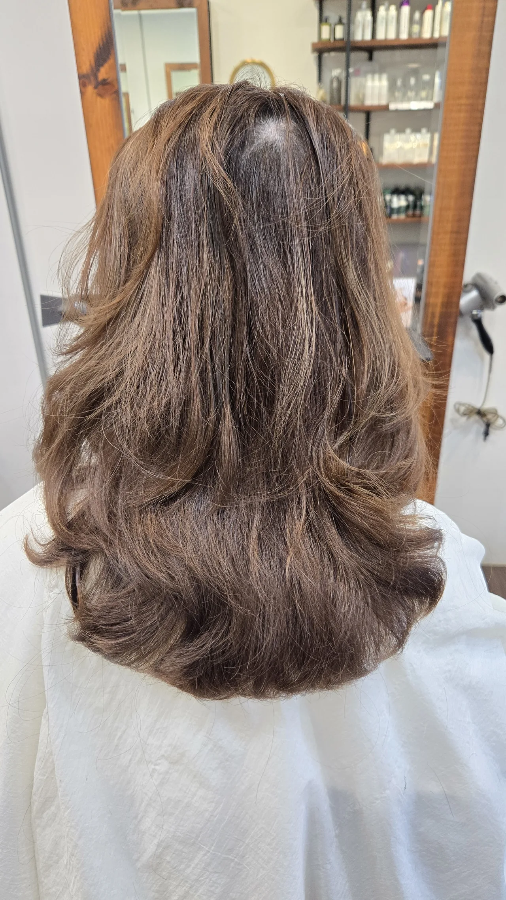
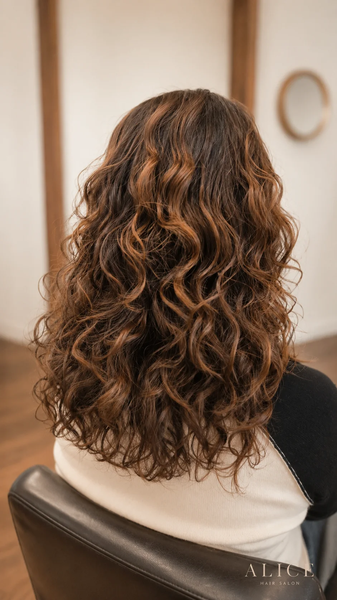
先評估染後與挑染區域的彈性、乾燥程度與髮尾狀況，再決定施作範圍與捲度配置。
完成後捲度清楚、集中且有層次，頂部與整體輪廓更蓬鬆，也讓染髮與挑染線條產生立體感。
使用慕斯抓入髮中至髮尾，再以烘罩低溫烘乾。避免高溫持續集中於挑染或較乾燥區域。
這組案例不代表所有染後或挑染髮都適合燙髮。受損程度不同時，可能需要降低捲度、縮小施作範圍或暫緩操作。
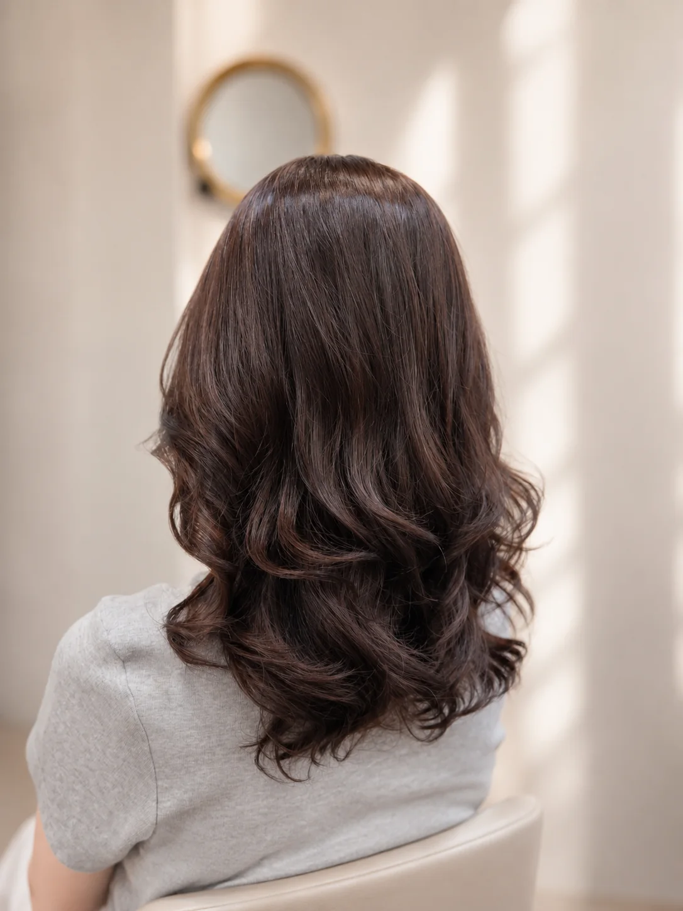
P02
顧客髮質細軟、髮量適中，希望髮型自然蓬鬆，但不喜歡過度明顯或密集的捲度。
以溫塑燙塑造中段至髮尾的柔和波浪，讓髮尾線條更完整，同時保留輕盈、自然的輪廓。
居家整理：將頭髮完整吹乾，再把髮尾分成左右兩側，順著捲度方向簡單繞吹即可。
本案例沒有施作前照片，因此只呈現完成效果。
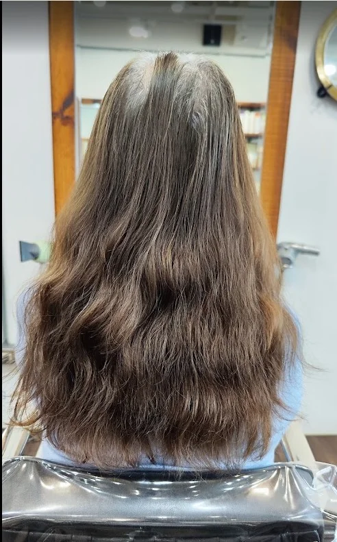
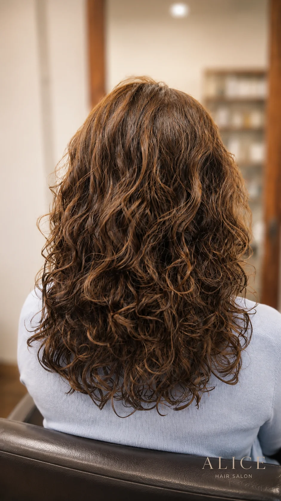
P05
顧客髮質細軟、髮量偏少，長期進行白髮染，髮中至髮尾有累積乾燥與受損。希望捲度明顯、具有持久度，並增加頂部與整體髮型的份量感。
技術規劃：先評估白髮染後不同區域的承受度，再安排捲度大小、排列與頂部支撐。
完成效果：完成後呈現清楚、立體且富有層次的捲度，視覺髮量與頂部支撐感增加。
居家整理：洗髮後使用慕斯，再以烘罩低溫烘乾。若完全拉直吹乾，捲度會較鬆散。
IRIS PERM WORKS
IRIS 的燙髮作品以柔和波浪、自然光澤與日常容易整理為主要方向。以下案例包含原生髮、多次染髮與不同捲度需求；實際技術、施作範圍與完成效果，仍需依每位顧客的髮況評估。
可指定 IRIS，也可由 ALICE 團隊依髮況、風格與預約時間協助安排設計師。
I01
顧客為原生髮，髮質中等偏細，帶有輕微自然捲。希望長髮呈現自然、浪漫的波浪感，同時維持回家容易整理的效果。
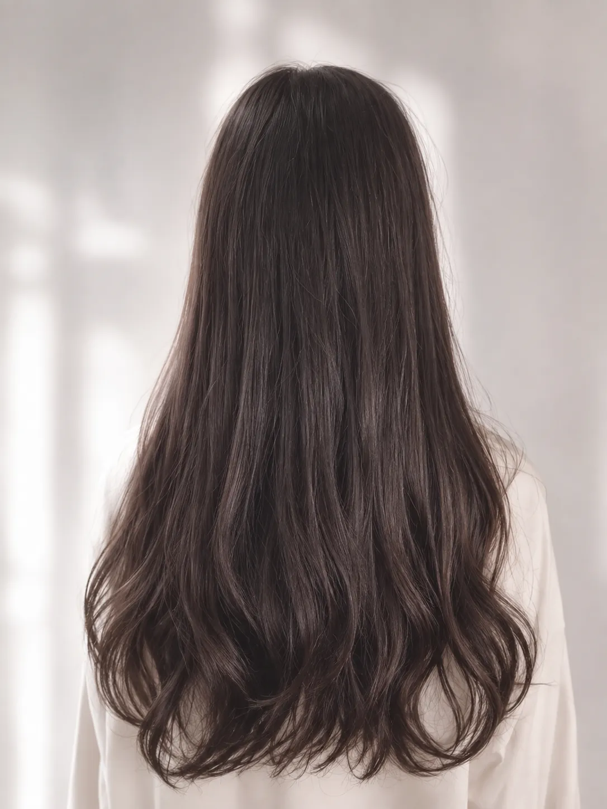
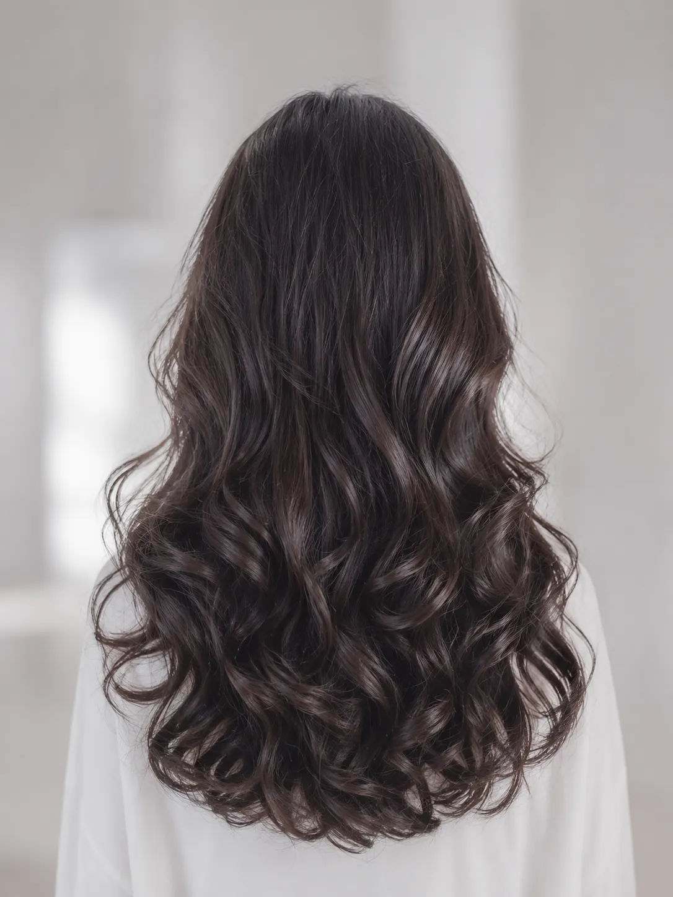
原生髮，髮質中等偏細，帶有輕微自然捲，整體髮況相對完整。
希望長髮呈現柔和浪漫的波浪，不追求過度密集或厚重的捲度，並希望平時吹乾後能簡單整理。
依原始髮質、髮長與層次，以溫塑燙規劃中段至髮尾的柔和波浪，保留髮根與上半部的自然順度，避免整體捲度過度厚重。
髮面呈現自然光澤，中段至髮尾形成柔和、流動的浪漫波浪，整體輪廓輕盈而不僵硬。
洗髮後將頭髮吹乾，再將髮尾分區，順著捲度方向簡單繞吹即可。
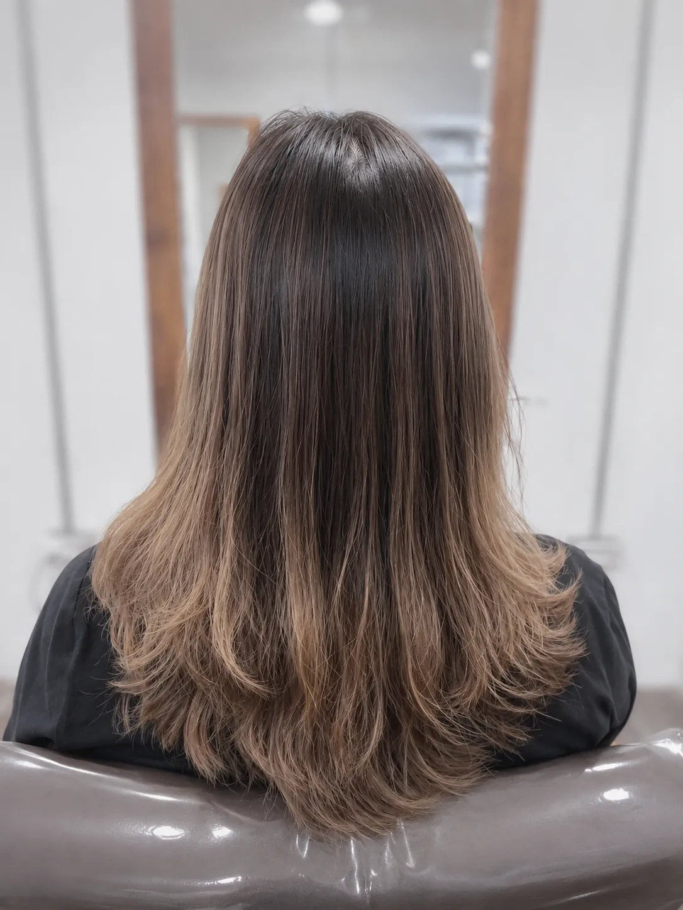
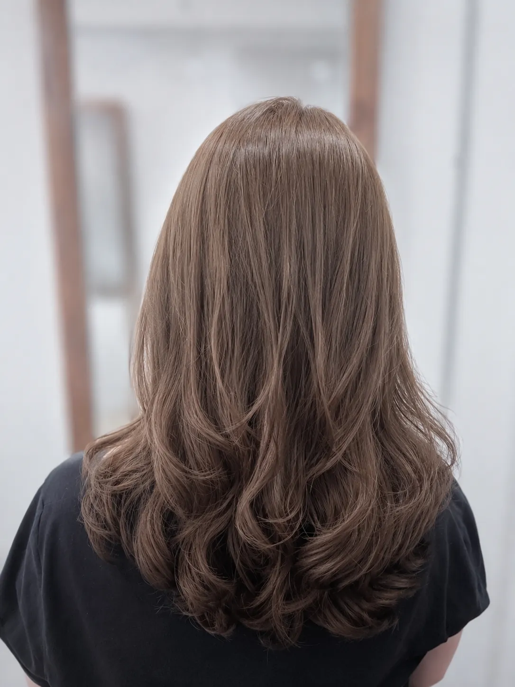
I02
顧客髮質偏軟，帶有輕微自然捲，曾染髮三次以上，髮尾有累積乾燥與受損。希望髮型自然、好整理，不追求明顯捲度。
原始髮況：偏軟髮，帶有輕微自然捲，曾多次染髮，髮尾有累積乾燥與受損。
技術規劃：先評估多次染髮後髮尾的承受度，再以溫塑燙將捲度集中在耳朵下方，保留頭頂與上半部的自然直順感。
完成效果：頭頂與髮面自然直順，耳下至髮尾呈現柔和微彎，增加輪廓與蓬鬆感，但不會顯得過度捲曲。
居家整理：吹至約九分乾後，將髮尾分區，順著設計方向繞吹即可。
多次染髮後需先評估髮尾承受度，再決定施作範圍與捲度，不代表所有染後受損髮況都適合相同操作。
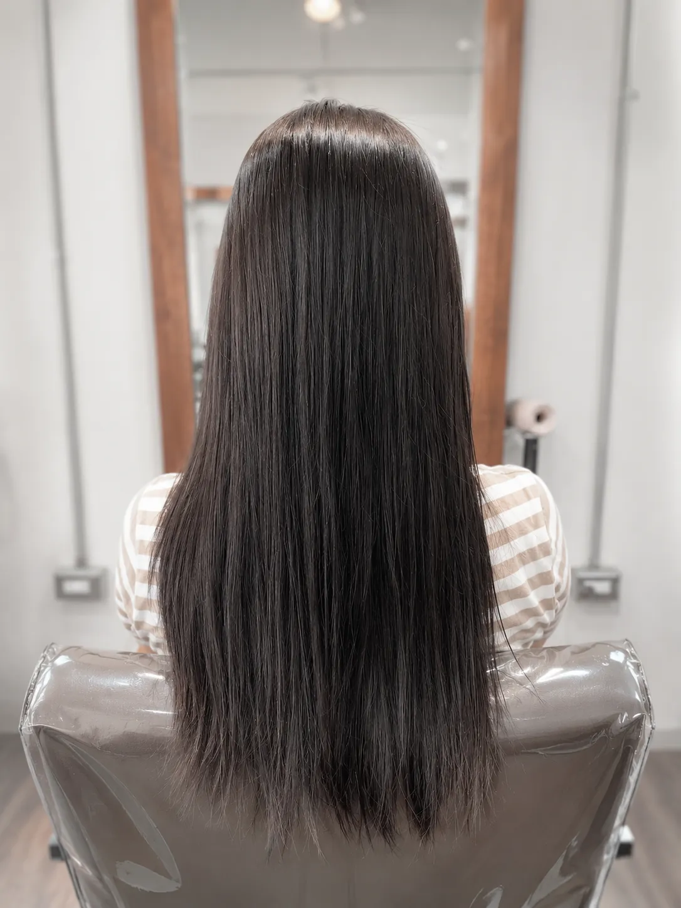
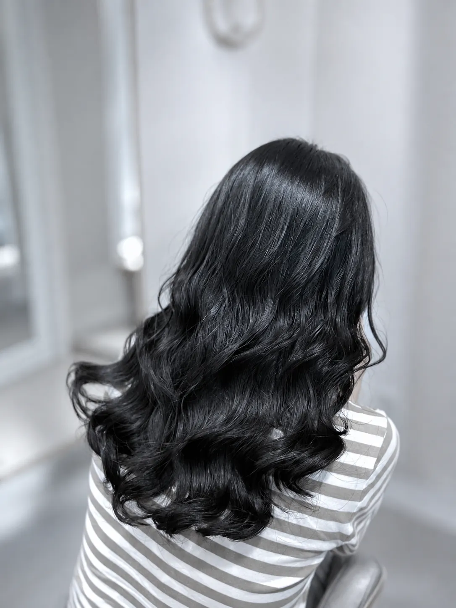
I03
顧客為原生髮，帶有輕微自然捲，希望呈現較有波紋感的長髮捲度，同時兼顧自然光澤與日常整理便利性。
原始髮況：原生髮，帶有輕微自然捲，整體髮況相對完整。
技術規劃：依髮長、層次與原始髮況，以溫塑燙規劃中段至髮尾較清楚的波紋線條，讓捲度具有立體感但不顯僵硬。
完成效果：中段至髮尾形成清楚、柔和且具有層次的波紋，髮面保有自然光澤，比一般柔和大彎更具造型感。
居家整理：吹至約九分乾後，依捲度方向分區繞吹；完成後可使用少量免沖洗保養品整理髮尾。
Hair Assessment
ALICE 不以「一定要完成參考照片」作為唯一目標。髮況不適合時，調整或暫緩操作也是專業判斷的一部分。
Process
傳送髮況照片、理想風格、過去染燙紀錄與方便到店時段。
到店後確認髮質、髮量、自然捲、受損程度與可施作範圍。
依目標捲度、髮長與整理習慣安排剪髮層次與操作方式。
施作中持續觀察髮況反應，完成後整理出目標線條。
示範吹整、繞吹、慕斯或烘罩方式，讓回家後知道如何維持。
Price & Time
| 服務項目 | 價格 | 預估時間 |
|---|---|---|
| 冷燙短髮 | NT$2,800～3,000 | 約 2 小時 |
| 冷燙中長髮 | NT$3,200～3,500 | 約 2.5 小時 |
| 溫塑燙短髮 | NT$3,800 | 約 3 小時 |
| 溫塑燙中長髮 | NT$4,200 | 約 3.5 小時 |
| 溫塑燙長髮 | NT$4,800 | 約 4 小時 |
| 髮根縮毛＋髮尾溫塑燙 | 現場評估報價 | 約 4.5 小時 |
Home Care
將頭髮完整吹乾，再把髮尾分成左右兩側，順著捲度方向繞吹，讓髮尾波浪更集中。
洗後先吸乾多餘水分，抓入慕斯，再用烘罩低溫烘乾，維持捲度的立體輪廓。
髮根與髮中先吹乾、吹順，再整理髮尾波浪，讓髮面與捲度各自維持在適合狀態。
燙髮不等於完全不需要整理。ALICE 會在施作前說明整理難度，完成後再實際示範。

Designer
本頁真實燙髮案例由 Jay 杰煬與 IRIS 共同提供，呈現不同髮況、捲度與居家整理需求的設計方向。
Jay 為 ALICE Hair Salon 講師級設計師，也是「美髮理科小教室」主理人。燙髮規劃會從髮況、藥劑反應、過往染燙紀錄與居家整理方式進行判斷，並在操作前說明可能的完成效果與限制。
本次新增的 IRIS 案例以自然柔和、保有光澤與日常容易整理的波浪設計為主要特色。顧客可指定 Jay 或 IRIS，也可由 ALICE 團隊依需求協助安排設計師。
FAQ
以下回答以第一版服務頁整理，實際規劃仍以現場髮況評估為準。
建議傳目前頭髮的正面、側面、背面照片，以及髮尾近照。如果有理想風格，也可以一起傳給我們作為溝通方向。
不需要先自行決定技術。設計師會依髮長、髮質、捲度目標與整理習慣，協助判斷冷燙、溫塑燙或其他分區處理是否適合。
細軟髮可以透過捲度與層次增加輪廓，但需要先評估髮絲承受度與支撐力。明顯捲度通常也需要慕斯與烘罩維持。
自然捲位置與程度不同，處理方式也不同。有些髮況可能需要髮根與髮尾分區規劃，例如髮根直順調整搭配髮尾溫塑燙。
需要先評估染後與挑染區域的彈性、乾燥程度與髮尾狀態。受損程度較高時，可能會調整捲度、縮小範圍或建議暫緩燙髮。
會依髮況、服務內容與預約時間判斷。若髮況需要更保守的安排，設計師可能會建議分開日期操作。
目前建議燙髮後至少等待約 24 小時再洗頭，實際仍可依設計師完成後的整理與養護建議調整。
柔和大彎通常需要吹乾與髮尾繞吹；明顯立體捲度多半需要慕斯與烘罩。完成照是方向參考，日常效果會受到髮況與整理方式影響。
Nankan Reservation
ALICE Hair Salon 位於桃園市蘆竹區南崁生活圈，採預約制服務。預約前可先透過 LINE 傳送髮況與參考照片，由團隊初步了解需求。
可指定 Jay，也可由 ALICE 團隊依需求協助安排適合的設計師。